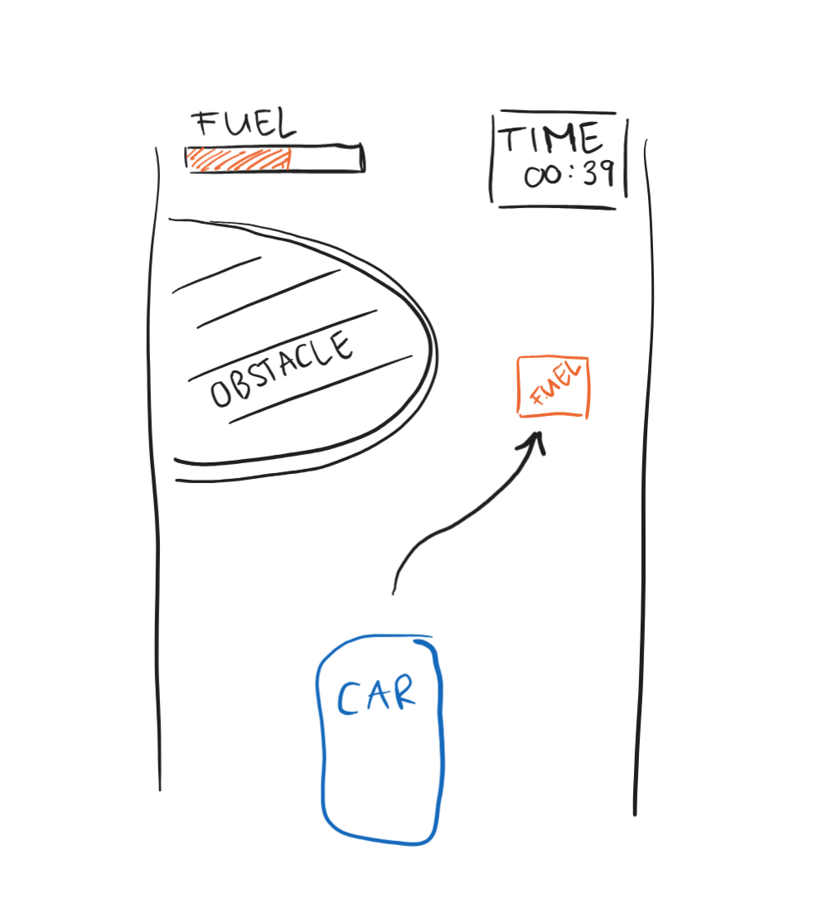

Early Sketch of Apex Drifters Game
By Apex Drifters Group 11/04/2023
This initial sketch illustrates the fundamental gameplay elements envisioned for Apex Drifters. The player must skillfully navigate the car around obstacles while collecting fuel to keep going. A time counter and fuel gauge are prominently displayed, providing the player with critical information to strategize their next move.
